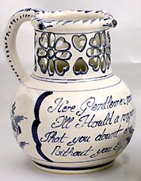
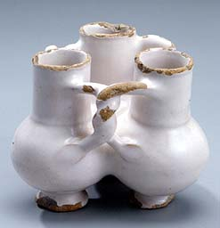
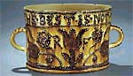

| In Their
Cups - The Story of the English Puzzle Mug
by Delia Robinson
Drinkers carousing in a Medieval tavern could have their brew served
in pottery mugs especially designed for by Delia Robinson
In
the simple pre-electronic days of old, drinkers carousing in taverns
might have enjoyed their brew from pottery mugs especially designed
for boisterous amusement. A ceramic frog peering from the bottom
of the cup, or a chirping whistle mug, such were the creations of
long-gone potters to enhance the hilarity of happy hour.
Unless held to the mouth in exactly the right way, a Puzzle Mug
would spill beer down the drinkers shirt. This was a big hit with
the tavern crowd. The mugs were designed with multiple dribble holes
and tunnels inside the handle and cup rim, the handle or walls connected
to a drinking spout at the lip of the cup. This would allow the
drinker to suck up his beverage, providing his fingers covered the
right combination of false drinking spouts also placed around the
cup lip. If he attempted drinking from the cup in the customary
fashion, the beverage would pour out through perforations carved
just under the lip. As the evening progressed into a rowdy uproar,
finding the safe spot from which to drink would become increasingly
chancy, providing merriment for all.
Staggering home in clothing soaked in beer has lost some appeal
down the centuries. This might explain why puzzle mugs have gone
out of vogue. They linger in a crude modern counterpart, the dribble
glass, found in novelty shops. This, merely a glass drilled with
a dribbling hole, is a far cry from the elaborate pottery concoctions
designed to send tavern patrons into stitches.
‘Fuddling cups’, charmingly named, required less skill
from the potter, but more from the drinker. They consisted of multiple
cups attached side by side into one diabolically messy drinking
container. Passageways between the cups required the drinker to
carefully empty them in the correct sequence. The wrong choice resulted
in a drenching, the right choice in befuddlement.

Joke mugs have lost none of their popularity over time. A slip
trailed witticism on a Staffordshire cup has its counterpart in
the office coffee mug of today, with its snappy saying or cartoon.
Even the frog in the mug has surfaced repeatedly, metamorphosing
into everything from submarines to naked ladies. A cup of this sort
was named a Nightingale, a genteel name suitable for tea drinkers.
Another option for the noisy set was the whistle mug. These came
in several variations. In the simplest, a whistle was affixed to
the handle of the cup. In a more complex form, the whistle chamber
was made to connect with an air passage into the bowl of the cup.
When empty and the whistle blown, only one note was emitted. When
the cup was full, the air bubbling through the liquid created melodious
trills and warblings. Some people insist it is correctly called
a Hubblebubble, which would seem to require beer.
Drinkers
from the past must have been a convivial lot. Many of the early
tavern mugs are found with two or more handles. This allowed several
drinkers seated around the table to have equal access to the brew.
At banquets, two handled ‘loving cups’ could be passed
easily along a line of guests, each taking a swig. Two handled cups
still persist, but, but primarily in their even more antique function,
for sports awards. Their utility is largely over; the beverage sharers
of today don’t require special containers but just pass the
bottle.
Since their heyday in the raucous taverns of the 16th-18th centuries,
the trickier cups have become rare specialty items. Whistle mugs
are still produced in Germany with the barrel shape reminiscent
of old tankards. Like their predecessors, they are often impressively
large. They hold amounts that could easily put several drinking
cronies under the table, though the one handle with a whistle perched
jauntily on top, suggests that a single drinker is expected to finish
it all.
Next > How
to Make a Puzzle Mug
Related Articles
How to Make a Nightingale Cup
How to Make a Puzzle Mug
How to Make a Clay Whistle
More Articles
More Articles
|